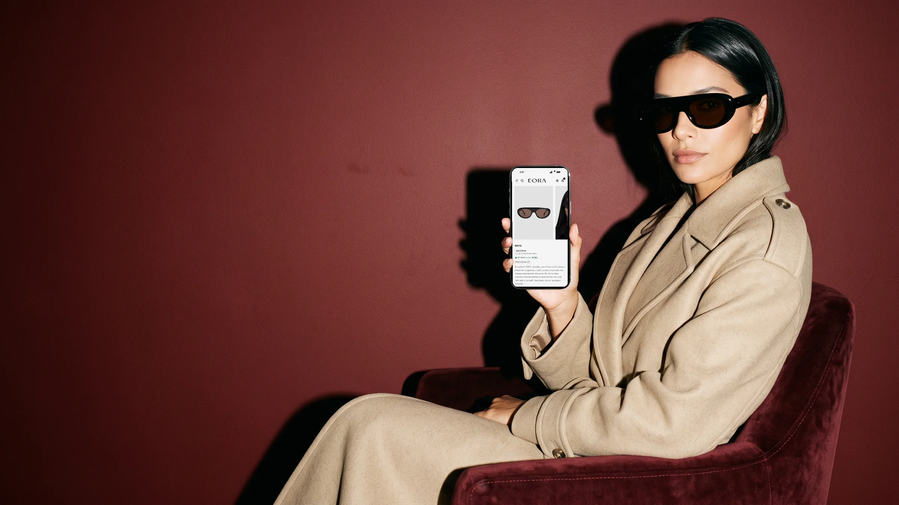
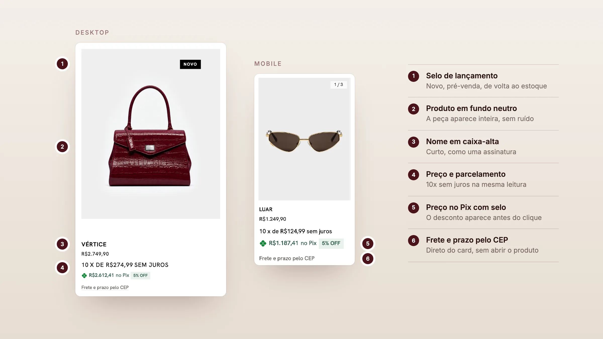
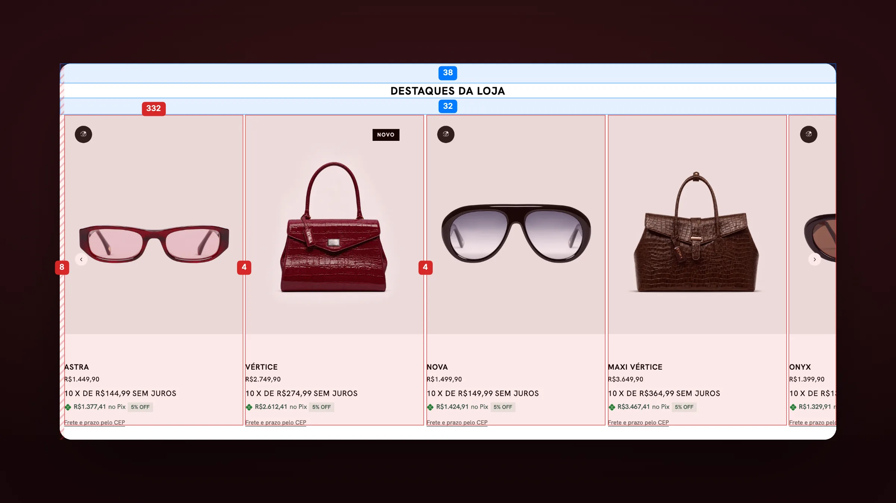
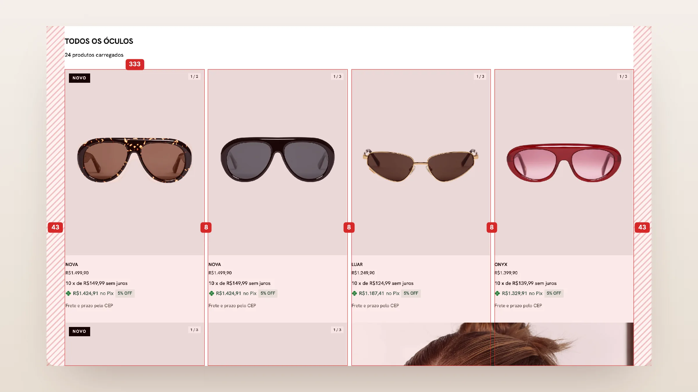
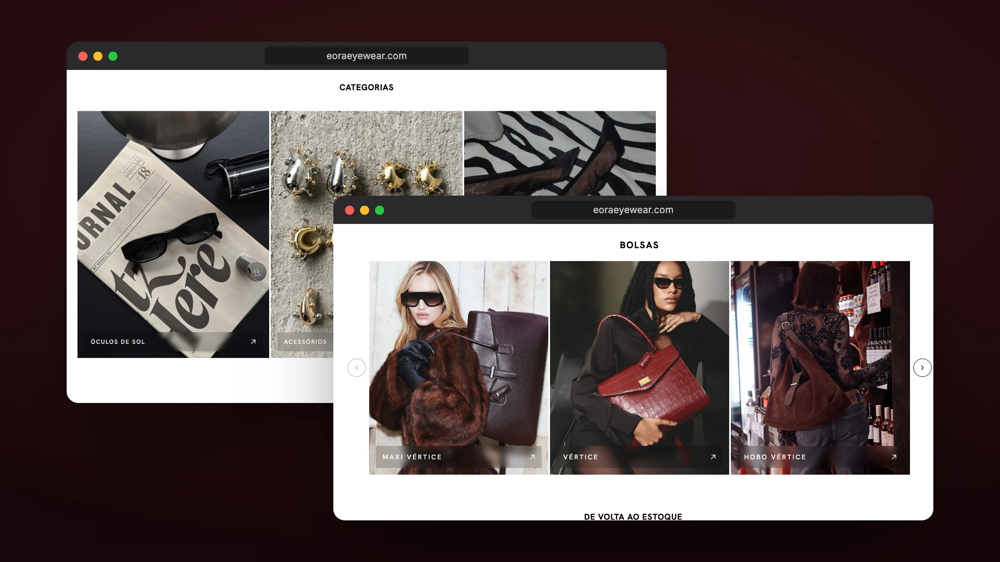
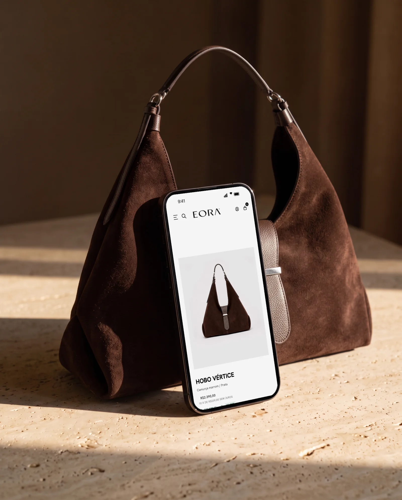
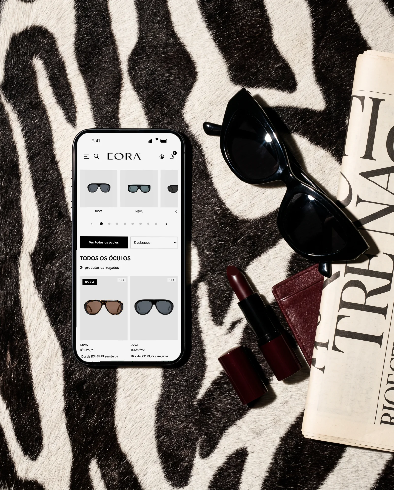
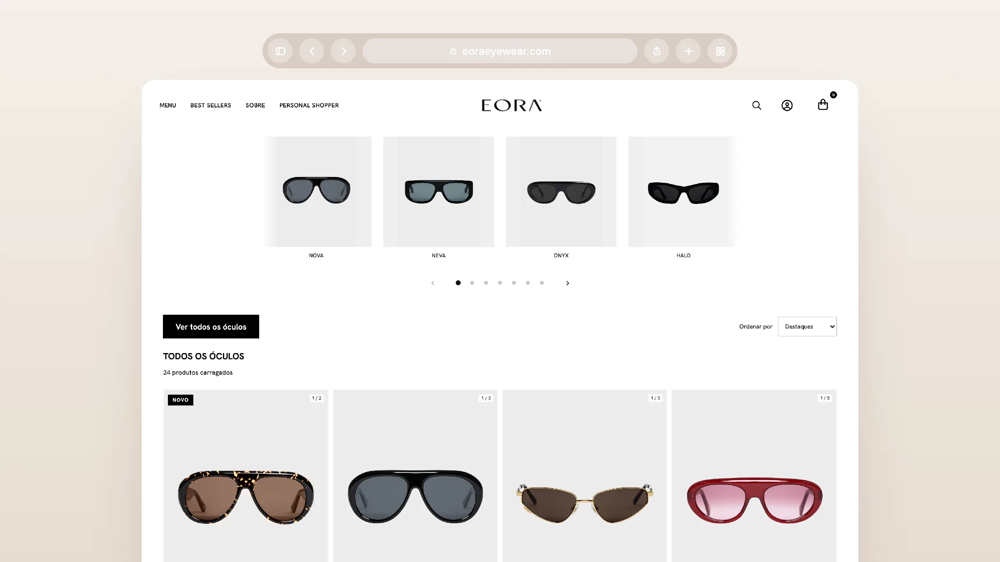
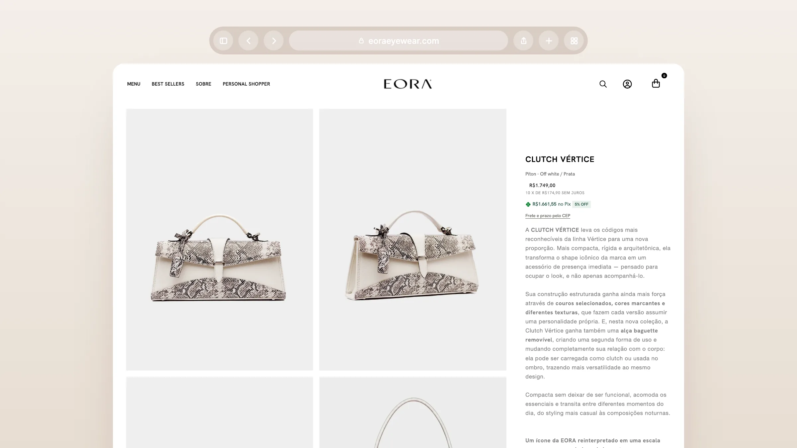
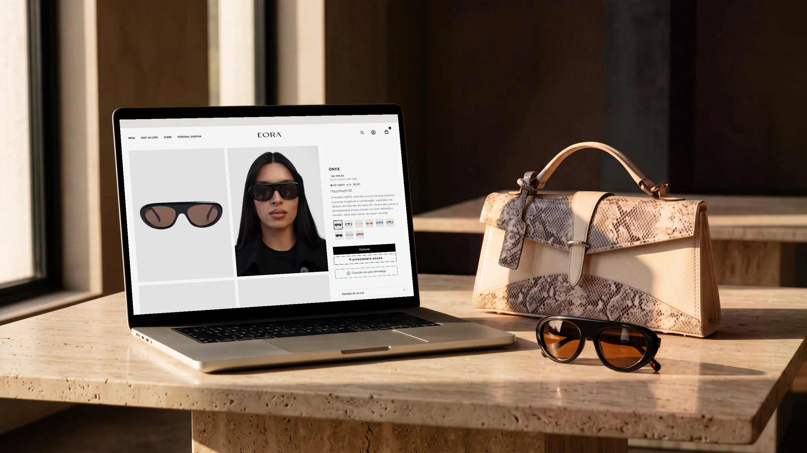

EORA
An object of desire, on screen too.
E-commerce layout for EORA, a Brazilian brand of sunglasses, handbags and accessories. Together with the agency TEC4U, I designed the store experience in Figma — home, listing, product page and the mobile versions. Development was handled by TEC4U.
Visit site ↗EORA treats every piece as an object of desire: fine leathers, original design and handcrafted finishing. The layout needed the same care — a quiet, black-and-white storefront that lets the editorial campaigns and the products speak, with room for the brand's story between one shelf and the next.
The card shows the whole piece on a neutral background, with the name in uppercase, price, 10x installments, the Pix price with a discount badge and the shortcut to shipping by postcode. Badges like New and Pre-order sit in the corner of the photo, without competing with the product.

On the home, product shelves use 332px cards with just 4px between them and bleed past the right margin, like a continuous shelf. On the listing, the four-column grid of 333px with 8px gaps, framed by 43px margins, mixes campaign photos in between the products. On mobile, two columns with 8px between them.


The home alternates product shelves with editorial blocks: the co-founder's words in a serif, categories in large photos and the handbag collections in a carousel. The tone is that of a fashion magazine, with discreet navigation on top.

A quiet storefront, so the piece can take center stage.


On the listing page, the product grid is interrupted by campaign photos, like the pages of a magazine. On the product page, the gallery shares the screen with the buying panel: name, Pix price, color variants as thumbnails, buy button, WhatsApp shortcut and the piece's measurements. The same template serves sunglasses, handbags and accessories.



The layout, desktop and mobile, was designed by Natália Cracco and me. The campaign photos and banners belong to EORA, and the store was built by TEC4U.
- Layout (UI/UX)
- Nícolas de Queiróz e Natália Cracco
- Development
- TEC4U
- Campaign photos and banners
- EORA